비서-3급 (2018-11-13 기출문제)
1과목: 비서실무
1. 김비서는 오늘 첫 출근을 하였다. 업무에 임하는 태도로 가장 바람직하지 않은 것은?
- 회사 조직도를 살펴보고 상사의 조직 내에서의 위치를 파악하고자 했다.
- 상사의 전화번호부를 숙지하고 그간의 업무일지를 살펴보고 자주 전화하는 사람들의 이름과 전화번호를 숙지하고자 했다.
- 회사에 오래 계신 분을 인사차 방문하여, 회사 내 비공식적인 정보를 파악하고자 하였다.
- 비서실의 서류철을 보면서 결재 체계에 대해 숙지하고자 하였다.
(정답률: 89%)

2. 김비서는 대표이사 비서로 2층에 있는 일반 직원들의 사무실과 떨어져서 회사 3층에서 근무하고 있다. 상사가 외출한 시간을 이용 하여 은행 업무와 우체국 업무를 처리해야 해서 외출하게 되었다. 외출 전에 김비서가 취할 업무 내용 중 가장 적절하지 않은 것은?
- 대표이사 및 비서의 사무실 전화를 김비서의 휴대전화로 착신 전환되도록 설정하고 외출하였다.
- 문 앞에 ‘외출 중’과 돌아올 예정 시간을 명시한 팻말을 붙인 후 비서실 문을 잠그고 나갔다.
- 아래층의 부서 직원에게 잠시 외출한다는 것을 알리고 나갔다.
- 상사에게 외출한다고 들어오시게 되면 알려 달라는 문자를 남기고 나갔다.
(정답률: 54%)
3. 다음 전화응대 중 비서의 전화응대로 가장 적절한 것은?
- 상사 출근 전에 사장을 찾는 전화가 와서 “사장님은 아직 출근하지 않으셨습니다. 출근 하시는 대로 전화를 드릴 테니성함과 전화번호를 알려주세요.”라고 응대하였다.
- 상사와 직위가 같은 분에게 전화를 연결하게 되어 상대방의 비서에게 “같이 연결하죠.”라고 제안을 했다.
- 상사가 전화 통화를 원하는 사람과 전화를 중개해야 하는 경우는 상대방이 상사보다 먼저 수화기를 들도록 한다.
- 비서는 상사와 자주 전화 통화를 하는 사람이라도 반드시 용건을 확인한 후 연결한다.
(정답률: 44%)
4. 윤비서는 공공기관의 임원비서이다. 평소 자주 내방하는 산하기관 임원이 상사와의 미팅으로 회사를 방문하였다. 연말연시를 맞이 하여 윤비서에게 고마움을 표시하며 상품권을 선물로 주셨다. 이 상황에서 윤비서의 가장 적절한 태도는?
- 윤비서는 ‘부정청탁 및 금품등 수수의 금지에 관한 법’에 저촉되므로 받을 수 없다고 단호히 사양한다.
- 윤비서는 평소 친분이 있는 분이므로 선물을 받는 것이 예의에 맞다고 생각하여 감사함을 표시하고 받는다.
- 윤비서는 마음은 감사하지만, 외부 고객으로부터는 선물을 받지 않는 것이 원칙이라고 말씀드리고 사양한다.
- 윤비서는 일단 선물을 받은 후 상사에게 어떻게 해야 할지상의 드린다.
(정답률: 81%)
5. 김영숙씨는 대학 졸업 후 입사 2일차의 신입 비서이다. 다음 전화 응대에 대한 설명이 가장 적절한 것은?
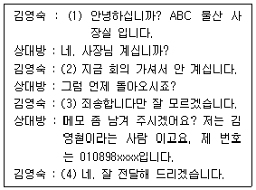
- (1) : 전화 받을 때는 소속과 비서의 이름을 이야기해야 했다.
- (2) : 상대방이 판단할 수 있도록 어떤 회의인지를 구체적으로 말해야 했다.
- (3) : 언제 들어오시는지 상세하게 응대했어야 했다.
- (4) : 이름과 번호를 재확인해야 했다.
(정답률: 69%)
6. 비서의 내방객 응대업무에 대한 설명으로 적절하지 않은 것은?
- 상사의 내방객 업무와 관련하여 상사가 선호하는 내방객응대 방식을 파악해야 한다.
- 상사와 면담을 요청하는 내방객에게 상사가 가능한 일정을 2~3개 먼저 제시하도록 한다.
- 내방객의 이름, 직책, 소속, 연락처, 용건, 면담 일시, 면담시간, 면담 장소 등의 기본적인 정보는 면담 약속을 정할 때 확인한다.
- 면담 약속의 취소 시에는 신속하게 연락하고 취소할 수밖에 없는 사유에 대해 솔직하고 자세한 설명과 변명을 하도록한다.
(정답률: 70%)
7. 비서의 인간관계 전략으로 가장 적절하지 않은 것은?
- 상대방의 관심사, 취미 등에 관해 대화를 시작하면서 업무 문제로 대화를 이어간다면 좀 더 부드럽게 업무를 해결할 수 있다.
- 고객과 상담하거나 고객 업무 처리 중에는 긴급한 다른업무가 아니면 고객에게 집중하도록 한다.
- 정보, 인적 네트워크 등 자신이 나눌 수 있는 것을 함께 공유하고 경조사도 챙겨준다면 인간관계는 더욱 돈독해질 것이다.
- 대화 시 내가 상대방에게 전해야 하는 내용 위주로 대화를 주도한다면 훨씬 더 우호적이고 신뢰가 가는 인간관계를 구축할 수 있다.
(정답률: 70%)
8. 비서로 입사한 지 3개월이 지난 A비서는 회사의 인원감축으로 인해 업무량이 점점 많아 스트레스를 심하게 느끼고 있다. 다음 중 가장 바람직한 대처 방법은?
- A비서가 먼저 업무 수행 능력과 업무 효율성에 대해 상사에게 평가를 요청한다.
- 상사에게 먼저 현재 상황을 말씀드려 상사가 비서실의 현황을 알 수 있도록 한다.
- 현재 A비서가 수행하는 업무의 양이 A비서 혼자 감당하기에는 너무 많음을 인사과에 알리고 추가 비서 배치를 요청한다.
- 비서의 업무는 위임이 불가능하므로 야근이나 주말 근무등을 통해 스스로 해결한다.
(정답률: 65%)
9. 상사의 갑작스런 해외 출장으로 일정을 변경해야 하는 상황이다. 이 경우, 가장 바람직한 일정조정 방법은?
- 상사와 면담이 잡혀 있는 상대방과의 일정을 재조정하기위해 상대방의 다음 주 주간일정표를 요청했다.
- 상대방에게 상사의 다음 일주일 일정을 알려주어 상대방이 가능한 시간을 선택할 수 있도록 하였다.
- 상대방에게 일정 변경 사유를 정중하게 설명하고 상대방이 먼저 일정을 잡도록 한 후 상사 일정을 상대방 일정에 맞추었다.
- 일정의 재조정을 위해 상사나 상대방의 가능한 일정 대안을 몇 개 받아서 조정했다.
(정답률: 45%)
10. 비서의 일정관리 업무 수행 자세로 가장 적절한 것은?
- 비서는 상사의 일정을 자주 확인해야 한다.
- 불가피하게 일정이 겹치는 경우, 비서가 업무의 중요도로 판단하여 조정한다.
- 일정관리 재량권이 있는 비서의 경우 일정을 확정한 후 추후 상사의 승인을 받는다.
- 상사가 업무에 집중할 수 있는 시간을 갖도록 비슷한 회의는 오전과 오후로 분산시킨다.
(정답률: 60%)
11. 다음 중 비서의 업무 수행이 가장 잘 된 것은?
- 상사가 선호하는 종이 기차 탑승권을 인쇄하여 상사에게 전달하였다.
- 호텔 숙박비 정산은 입실날짜부터 퇴실 날짜까지 포함해 지급한다.
- 호텔 예약 시 상사가 편안하게 숙박할 수 있는 특급호텔로 선정한다.
- 렌트카를 예약할 경우, 안전을 대비하여 조금 비싸더라도 좋은 차종으로 한다.
(정답률: 57%)
12. 상사는 A항공사의 마일리지를 적립하고 있다. 상사는 다른 항공사의 비행기를 이용하더라도 마일리지는 A항공사에 적립하기를 원한다. 이 때 이용할 수 있는 항공사의 서비스는 무엇인가?
- 오픈티켓(Open Ticket)
- 환승(Transfer)
- 경유(Transit)
- 항공 동맹(Code-Share)
(정답률: 79%)
13. 다음 중 비서의 회의 보좌 업무 수행 방식으로 가장 적절하지 않은 것은?
- 회의 통지서는 적어도 회의 10일 전에 상대방이 받아 볼 수 있도록 하며, 긴급히 개최하는 회의인 경우라도 최소 회의 2~3일 전에는 받아 볼 수 있도록 해야 한다.
- 회의 참석 여부를 사전에 알아야 하는 경우에는 참석 여부를 회신해 줄 것을 통지서에 기입하는데, RSVP는 참석 여부를 알려 달라는 불어 약어이다.
- 발표회나 설명회와 같이 정보 전달을 목적으로 하는 회의나 주주 총회 등 참석자가 많을 때는 둥근 탁자나 사각 탁자에 둘러앉는 원탁형이나 네모형으로 좌석을 배치하는 것이 적당하다.
- 회의 통지서는 초안 작성 후 상사의 검토와 승인을 받아 발송하는데, 외부 회의인 경우는 회의 개최측의 담당자와 연락처, 교통편 등을 기입한다.
(정답률: 61%)
14. 다음 중 한자가 잘못 표기된 것은?
- 결혼식 - 축 화혼 : 祝 花婚
- 승진시 - 축 승진 : 祝 昇進
- 회갑시 - 축 회갑 : 祝 回甲
- 취임시 - 축 취임 : 祝 就任
(정답률: 44%)
15. 다음은 비서가 상사에게 보고하는 대화 내용이다. 이 중 가장 올바른 대화법은?
- “사장님, 오후 2시에 회장님 비서실에서 사장님 돌아오면 바로 오셔달라는 연락을 받았습니다.”
- “사장님, 김 부장께 서류를 직접 주고 이제 막 사무실에 도착했습니다.”
- “사장님, 제가 기획실장님께 전략 회의 발표 건을 물어보고 알려 드리겠습니다.”
- “사장님, 회장실에 서류를 두고 오셔서 제가 찾아왔습니다.”
(정답률: 55%)
16. 다음 중 비서가 상사의 지시를 받는 태도로 가장 적절한 것은?
- 업무 지시를 하는 상사의 말을 집중하여 잘 듣고 나와 바로 메모해 둔다.
- 지시를 받는 도중 잘 이해가 안 가면 복창을 하면서 재확인한다.
- 지시를 받는 도중 상사의 지시 내용을 상세하게 메모한다.
- 지시를 받으면 바로 일을 시작한다.
(정답률: 40%)
17. 상사의 대·내외 활동을 지원하는 비서의 업무 수행 방식으로 가장 적절하지 않은 것은?
- 비서는 업무상 공·사를 구분하여 상사와 공적으로만 관련된 인사 정보를 수집하여 데이터베이스화 해둔다.
- 비서는 상사와 관련이 있는 주요 인사에 대해서는 되도록 많은 정보를 축적해 둔다.
- 비서는 상담 차 방문한 고객들의 용건이나 방문 일시 등을 카드 형태로 정리해 둔다.
- 비서는 상사가 좋아하는 음식의 종류별로 맛집 리스트를 정리해 둔다.
(정답률: 58%)
18. 신입사원인 고혜란 비서는 비서 업무 효율성을 높이기 위해서는 인맥 형성이 중요하다는 조언을 선배들로부터 받았다. 다음 중 고비서가 인적 네트워크를 형성하기 위해 노력하는 방법으로 가장 적절한 것은?
- 회사내 모임에 가입하여 적극적으로 활동하여 타부서 직원 들과의 관계를 돈독히 한다.
- 비서 동호회에 가입하여 다른 조직의 비서들과도 교류하여 모임에 꾸준히 참석할 뿐만 아니라, 우리 회사에 입사지원 예정인 동호회 회원인 지원자에게 채용 기준과 배점 정보를 제공한다.
- SNS를 이용하여 업무에 도움이 될 수 있는 정보를 습득하고 교류할 뿐만 아니라, 개인 계정을 통해 회사 신제품을 적극적으로 홍보한다.
- 회사 노조에 가입하여 노조원들의 의견을 상사에게 전달하여 원만한 노사관계가 될 수 있도록 노력한다.
(정답률: 52%)
19. 다음 중 경조사 업무를 수행하는 비서의 자세로 가장 적절하지 않은 것은?
- 신문의 인물 동정란이나 인물 관련 기사를 매일 빠짐없이 확인하고, 사내 게시판 등에 올라오는 경조사도 확인해야 한다.
- 상사와 관련된 경조사가 발생하면 먼저 회사의 경조사 규정을 확인하여 화환이나 부조금을 준비하는 데 참고한다.
- 상사의 친지나 친구, 자사나 거래처 사람, 그리고 상사의 모임이나 단체 관계자의 사망 소식을 들으면, 즉시 사망 일시, 조문 장소, 발인 시각과 장지, 장례 형식, 상주 성명, 주소, 전화번호 등을 확인하여 상사에게 보고하고 적절한 조치를 하도록 한다.
- 조문 시 상제에게 위로의 말을 전하면서 사망 경위 등을 자세히 듣는 것이 좋다.
(정답률: 80%)
20. 상사가 타부서에서 자료를 받아 내일 9시 회의에 사용할 수 있도록 정리하라고 지시하였다. 타부서에서 자료를 늦게 받아 최종본이 밤늦게 완성되었다. 김비서는 내일 9시에 사내교육에 참석하여야 한다. 다음 중 김비서의 업무 수행 자세로 가장 적절 한 것은?
- 늦었더라도 지시사항이므로 완성되었다고 상사에게 전화로 보고한다.
- 완성된 자료를 회의장에 미리 갖다 두어 출근하는 즉시 볼 수 있도록 한다.
- 예약문자 기능을 활용하여 내일 아침 일찍 상사가 업무 진행 내용을 확인할 수 있도록 한다.
- 옆자리의 직원에게 보고사항을 부탁한다.
(정답률: 61%)
2과목: 사무영어
21. 아래 문서에 대한 설명으로 가장 적합한 것은?
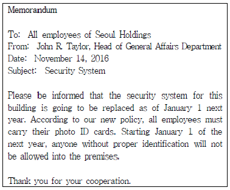
- 이 문서는 사내 문서이다.
- 새로운 건강관리 시스템에 대한 안내문이다.
- 발송인은 안전관리 부서의 부서장이다.
- 위의 메모를 받아보는 사람은 총 10명이다.
(정답률: 65%)
22. 다음 중 영어 약어와 내용 연결이 잘못된 것은?
- ASAP - as soon as possible
- CEO - Chief Executive Officer
- FYI - For Your Information
- MA - Master of Availability
(정답률: 59%)
23. 다음 중 문법적으로 가장 올바르지 않은 것을 고르세요.
- Haven't we meet somewhere before?
- Please call me Miss Lee.
- I would like to introduce Mr. Smith.
- Long time no see.
(정답률: 56%)
24. 아래 팩스에 대한 설명으로 바르지 않은 것은?
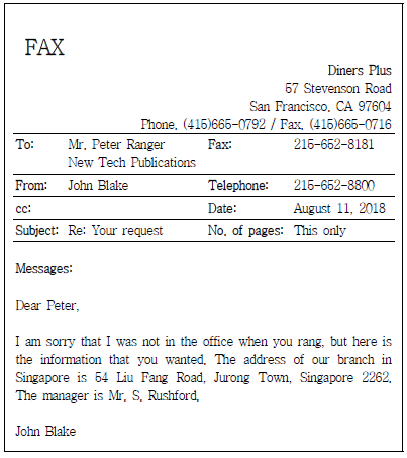
- 수신인은 Peter Ranger이며 총1장의 팩스를 받는다.
- 이 팩스에는 동봉물이 있다.
- John Blake는 Diners Plus에 근무한다.
- 수신인의 팩스 번호는 지역번호 215 팩스번호 652-8181이다.
(정답률: 71%)
25. 다음 중 이메일 작성 시 맺음말로 올바르지 않은 것은?
- Please give my best regards to Mr. Park.
- We are writing to double-check your payment.
- We look forward to your prompt reply.
- We hope to hear from you soon.
(정답률: 63%)
26. 영문서신 봉투에 적을 수 있는 내용으로 가장 적절치 않은 것은?
- Sincerely yours,
- Confidential
- Special delivery
- 발신인 주소
(정답률: 42%)
27. Ms. Shin의 새로운 e-mail 주소는 언제부터 유효한가?
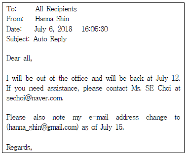
- July 6
- July 12
- July 14
- July 15
(정답률: 74%)
28. 다음 우리말을 영어로 옮길 때 괄호 안에 가장 적합한 것을 고르시오.
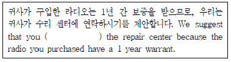
- contact
- contacted
- would contact
- would have contacted
(정답률: 53%)
29. 아래 __________에 들어갈 표현으로 가장 바르지 않은 것은?(문제 출제 오류로 2, 3번 보기가 실제 시험에서 같았습니다. 이점 참고하시어 문제 푸시기 바랍니다.)
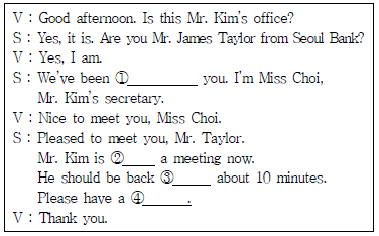
- waiting
- in
- in
- seat
(정답률: 50%)
30. 다음 보기 중 빈칸에 들어갈 내용으로 가장 적절한 것은?
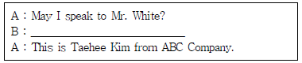
- Who's calling, please?
- Would you like to wait?
- May I help you?
- When will you be back?
(정답률: 83%)
31. 다음 대화의 빈칸에 들어갈 내용으로 가장 적절하지 않은 것은?
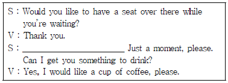
- Mr. Brown will be here shortly.
- Mr. Brown will be with you in a minute.
- Is Mr. Brown speaking?
- Mr. Brown will see you soon.
(정답률: 61%)
32. 다음 내방객 응대의 대화에서 한글 뜻에 가장 적절한 영어 표현을 고르세요.
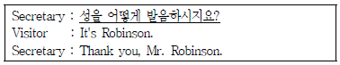
- What do you pronounce your last name?
- How do you pronounce your last name?
- How do you pronounce your first name?
- What do you pronounce your first name?
(정답률: 70%)
33. 다음 전화대화에서 밑줄 친 부분의 영어표현으로 가장 알맞은 것은?
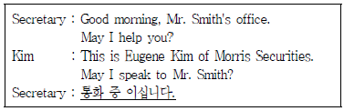
- I'm afraid he hangs up.
- I'm afraid he's on another line.
- I guess he changes his call.
- I guess his line is very terrible.
(정답률: 67%)
34. 다음 __________에 들어갈 표현으로 적절한 것은?
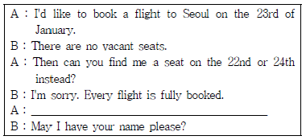
- Let me check if there are any seats available.
- We have two flights available on that day.
- Can you place my name on the waiting list, then?
- Can I have your passport and a credit card?
(정답률: 63%)
35. 아래의 전화 메모에 해당되지 않는 내용은?
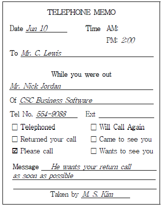
- 전화를 걸은 사람은 Mr. Nick Jordan이다.
- Mr. Jordan은 Mr. Lewis가 가능하면 빨리 연락해줄 것을 요청한다.
- Mr. Lewis는 CSC Business Software에 근무하고 있다.
- 전화를 받은 사람은 M. S. Kim이다.
(정답률: 62%)
36. 아래 __________에 들어갈 표현으로 적합하지 않은 것은?
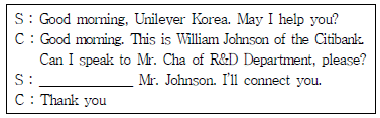
- Hold on, please
- Just a moment
- Hang up the line, please
- One moment, please
(정답률: 56%)
37. 다음 한글 뜻에 맞는 영어 문장으로 가장 적절한 것은?
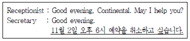
- I'd like to postpone my reservation in November 2nd at6 o'clock.
- I'd like to put off my reservation on November 2nd on 6 o'clock.
- I'd like delete my reservation in 2nd November on 6 o'clock.
- I'd like to cancel my reservation on November 2nd a t6 o'clock.
(정답률: 76%)
38. 다음 보기의 대화 내용이 가장 적절하지 않은 것은?
- A : How long will it take to Paris?
B : About 2 hours. - A : What’s the purpose of your visit?
B : Sightseeing. - A : May I see your passport, please?
B : Sure, here it is. - A : Are there any message for me?
B : Go ahead.
(정답률: 73%)
39. 아래 대화에서 회의는 언제 시작하기로 예정되어 있었는가?
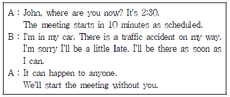
- 2시 20분
- 2시 25분
- 2시 30분
- 2시 40분
(정답률: 72%)
40. 다음 일정표의 내용과 일치하지 않는 것은?
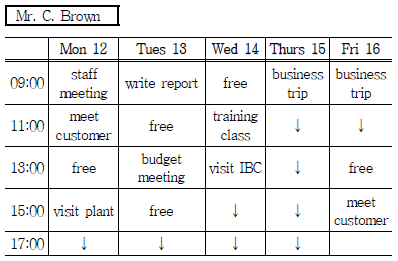
- Mr. Brown은 월요일에 공장방문이 있다.
- Mr. Brown은 화요일 오후 1시에 품질관리 회의가 있다.
- Mr. Brown은 목요일과 금요일에 출장일정이 있다.
- Mr. Brown은 화요일 오전에 보고서를 작성할 예정이다.
(정답률: 66%)
3과목: 사무정보관리
41. 다음 중 밑줄 친 부분의 맞춤법이 올바른 것은?
- 이 자리를 빌어 감사인사를 드립니다.
- 그럼 다음 주에 뵈요.
- 이것보다 저것이 낳다.
- 사고난 지 도대체 며칠 째야?
(정답률: 61%)
42. 다음 중 시행 문서 발송을 위한 직인 날인 또는 직인생략 표시 처리가 가장 적절한 것은?
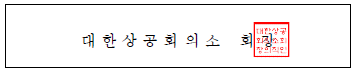
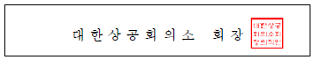
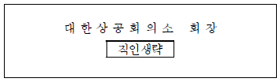
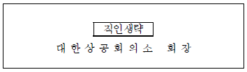
(정답률: 75%)
43. 직무 전결 규정에 의거하여 기안문 결재를 진행하고 있다. 부사장이 전결해야 하는 안건이며, 부사장은 현재 해외 출장 으로 부재중이며 부사장의 직무대리자는 전무이사이다. 이때 문서의 결재 처리가 가장 올바른 것은?
- 대리 김희성, 팀장 구동매, 전무이사 전결 최유진
- 대리 김희성, 팀장 구동매, 전무이사 대결 최유진, 부사장 전결 고애신
- 대리 김희성, 팀장 구동매, 전무이사 대결 최유진, 부사장 전결
- 대리 김희성, 팀장 구동매, 전무이사 전결 최유진, 부사장 대결
(정답률: 58%)
44. 다음 설명에 해당하는 문서의 종류로 가장 적절한 것은?
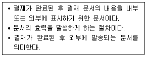
- 기안문
- 시행문
- 의례문
- 사문서
(정답률: 59%)
45. 편지 내용문과 주소록 파일을 디스켓이나 USB 등에 담아 우체국 또는 인터넷 우체국을 통해서 접수하면 내용문 출력부터 봉투에 넣어 배달하는 전 과정을 우체국에서 대신해주는 서비스에 해당하는 우편 서비스의 명칭은?
- 편지 병합
- 우편 대행 서비스
- e-그린우편
- 인터넷우편대행 서비스
(정답률: 40%)
46. 다음 중 문서가 필요한 이유에 해당하지 않는 것은?
- 사무처리결과의 전자화
- 사무처리결과의 증빙
- 사무처리를 위한 의사소통
- 복잡한 내용의 체계적인 정리
(정답률: 59%)
47. 다음 안내문에 대한 설명이 가장 적절하지 않은 것은?
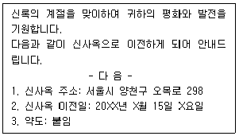
- 의례문서의 일종이다.
- 문서에 적힌 수신자의 소속, 직위, 이름이 봉투와 일치하는지 확인한다.
- 안내문은 가을에 작성되었다.
- 약도는 별도의 문서로 작성되어 첨부되었다.
(정답률: 63%)
48. 다음 중 공문서에 어울리도록 순화하여 가장 올바르게 작성한 문장은?
- 이 문서는 김미소 비서에 의해 작성되었다.
- 김미소 비서가 이 문서를 작성하였다.
- 우리 회사의 목표는 높은 성과를 받는 데 있다.
- 이번 중간고사에 있어서 부정행위를 엄단합니다.
(정답률: 39%)
49. 다음 광디스크의 용량이 작은 것에서 큰 순서대로 된 것은?
- CD-bluray-DVD
- DVD-CD-bluray
- bluray-DVD-CD
- CD-DVD-bluray
(정답률: 61%)
50. 비서가 업무상 소셜 미디어를 활용하는 태도로 가장 적절하지 않은 것은?
- 회사의 SNS를 수시로 모니터링하여 소비자들의 반응을 살피고 이슈가 되는 내용을 파악한다.
- 비서는 자신의 회사뿐만 아니라 경쟁사들의 SNS에도 관심을 갖고 모니터링을 한다.
- 회사가 사용하는 SNS뿐만 아니라 새로 만들어지고 운영되는 SNS의 기능과 특징을 파악하여 상사에게 보고한다.
- 사내 직원들이 회사 SNS를 활용하고 홍보할 수 있도록 권장하는 일은 사내 홍보관련 부서의 업무이므로 관여하지 않는다.
(정답률: 76%)
51. 다음 설명이 의미하는 것으로 가장 적절한 것은?
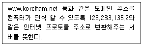
- DNS 서버
- 게이트웨이
- 서브넷 마스크
- IP 주소
(정답률: 50%)
52. 다음 중 저장 용량이 가장 작은 단위는?
- GB
- KB
- MB
- TB
(정답률: 62%)
53. 신문사나 방송사가 정보를 선택하여 독자나 시청자에게 전달하는 방식과는 달리, 독자의 요구에 따라 가공, 편집한 정보를 전달하는 방식을 의미하는 용어는?
- NOD
- VOD
- NIE
- UCC
(정답률: 51%)
54. 다음 중 컴퓨터 범죄에 해당하지 않는 것은?
- 피싱
- 파밍
- 스미싱
- 패싱
(정답률: 59%)
55. 다음 중 컴퓨터가 바이러스에 감염되었을 때 사용할 수 있는 소프트웨어가 아닌 것은?
- V3
- 비트디펜더(Bitdefender)
- 노턴안티바이러스
- 파이어폭스
(정답률: 64%)
56. 비서 업무 중 보안 관리의 태도로 가장 부적절한 것은?
- 업무와 관련된 회사 내부 직원들의 요청이 있을 시 상사의 자세한 일정을 공유하여 업무 효율성을 높인다.
- 상사가 건넨 명함의 분실에 대비하여 사본을 복사하여 관리하도록 한다.
- 상사를 대신하여 이메일을 발송할 경우 바로 전송하지 말고 그 초안을 상사에게 보고하고 확인받는다.
- 상사가 받은 명함의 정보를 타인에게 알려 주거나 외부에 유출되지 않도록 주의를 기울인다.
(정답률: 69%)
57. 김비서는 고용지원장려금을 신청하기 위해 신규직원 고용계약서를 스캔하여 JPG파일로 저장한 후 고용보험 홈페이지에 업로드하려고 하였다. 그런데 파일의 크기가 업로드 기준에 비해 너무 커서 업로드 되지 않았다. 이때 파일의 크기를 편집할 소프트웨어로 가장 적절한 것은?
- 윈도우 미디어 플레이어
- 한글
- 스프레드시트 프로그램
- 그림판
(정답률: 56%)
58. 상사의 스마트폰을 관리하는 비서로서 인지하고 있어야할 스마트폰 사용 보안수칙으로 가장 적절하지 않은 것은?
- 블루투스, Wi-Fi 기능은 평소 꺼두는 것이 좋다.
- 은행보안카드 등 중요한 개인정보는 가급적 스마트폰에 저장하지 않아야 한다.
- 잠금화면은 신속한 응대를 위하여 보안설정(패턴, 지문인식등)을 적용하지 않는다.
- 백신앱은 반드시 설치하여 사용한다.
(정답률: 77%)
59. 다음 중 정보전송기기가 아닌 것은?
- 전화기
- 팩스
- 화상회의시스템
- 문서세단기
(정답률: 75%)
60. 다음 중 클라우드 서비스에 관련한 사항으로 가장 거리가 먼 것은?
- 공간적 제약 없이 파일의 보관 및 관리가 용이하다.
- 사용자 데이터 및 자료를 온라인 서버에 저장해 두고 필요시 다운로드해서 사용한다.
- 대용량 파일이나 문서를 공유하기 용이하다.
- 블로그와 트위터가 대표적인 서비스이다.
(정답률: 70%)